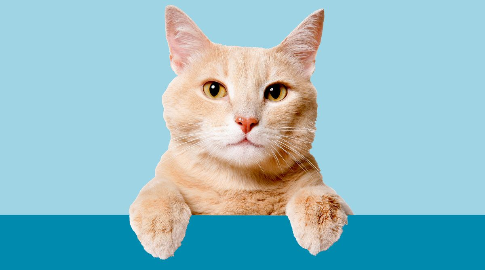
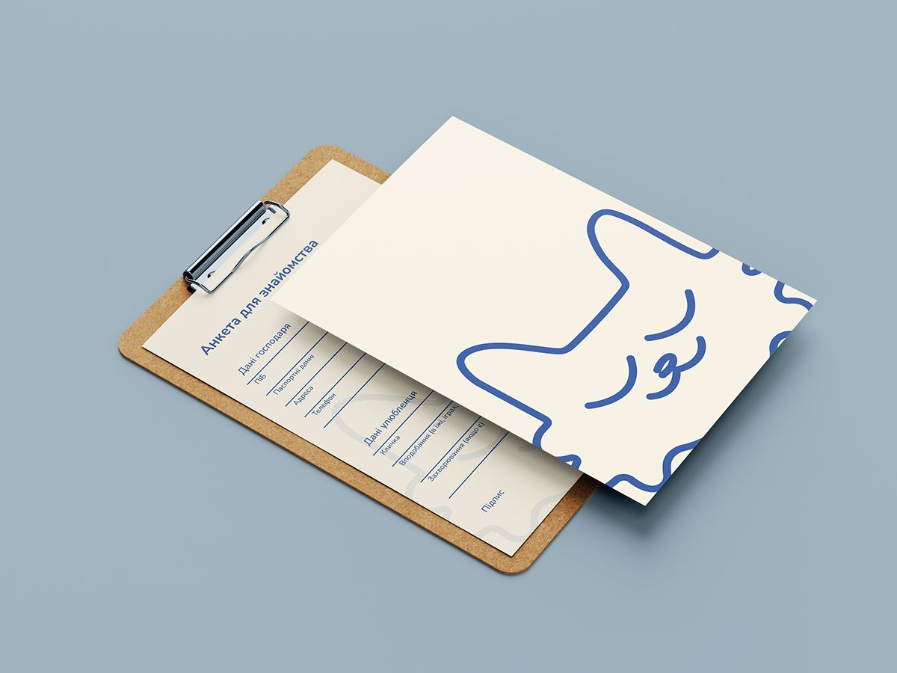
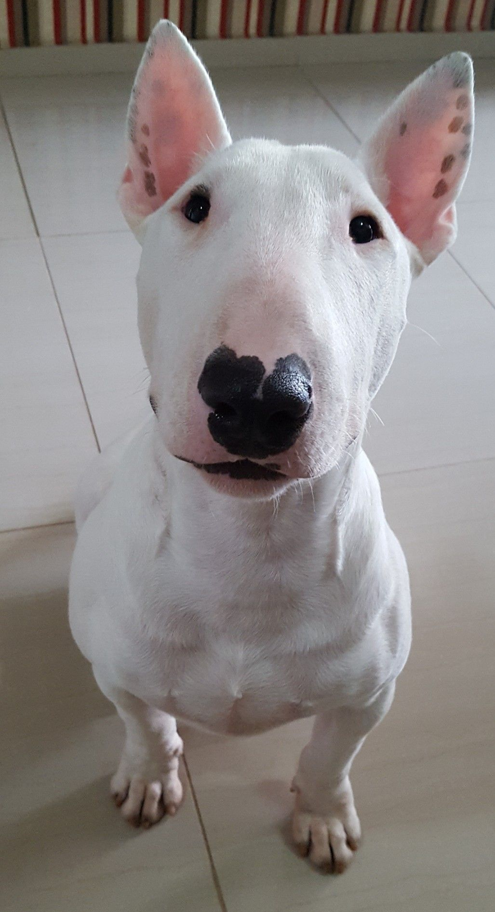
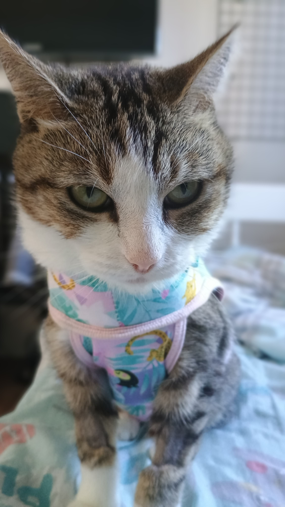
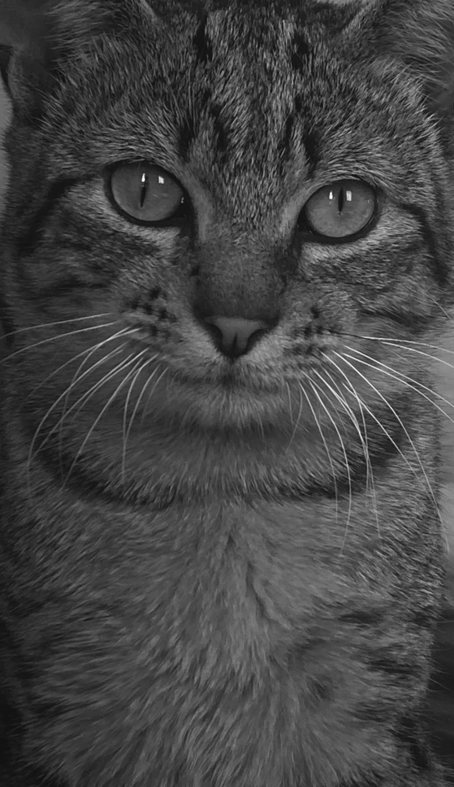

Dados Pessoais
- Nome
- Rafael Rodrigues
- CPF
- ***.456.789-**
- Telefone
- (47) 99123-4567
- rafaelro@gmail.com
Bem-vindo(a) de volta
Aqui você encontra o prontuário completo dos seus companheiros, próximas consultas e muito mais. Tudo em um só lugar.
Ver meus petsDados cadastrais e preferências de atendimento


Ficha completa de cada um dos seus pets

CãoBull Terrier · Macho

GataSRD · Fêmea

GatoSRD · Macho
Sua agenda de atendimentos veterinários
Avaliação ortopédica da displasia · Dr. Fernando Moura
Quádrupla Felina + antirrábica · Dra. Carla Lima
Procedimento cirúrgico · Dr. Fernando Moura
Memórias especiais dos nossos pacientes
Nossa equipe está pronta para te atender com todo carinho que seus pets merecem.
Rua Antonio, 320 — Jaraguá do Sul, SC
Seg–Sex 8h–18h · Sáb 8h–12h
Marque online pelo nosso sistema de agendamento rápido.
Agendar agora Ver prontuários